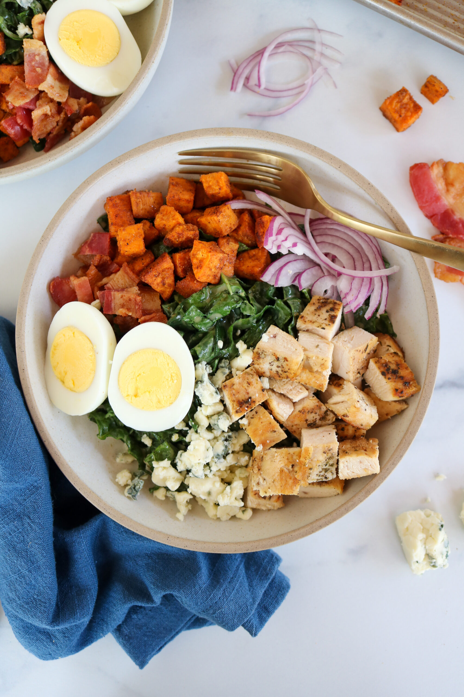

ketchup aka katsup
home

description:::
A Cobb salad is an American dish that consists of lettuce topped with
bacon, chicken, boiled eggs, tomatoes, and other ingredients arranged in
neat rows. It is traditionally served as a main course. The origins of the
classic salad is unclear, but many believe it was created in the late 1930s
at the Brown Derby restaurant in Hollywood. Stolen from
allrecipes.com
ingredients::
- 6 slices bacon
- 3 large eggs
- 1 head iceberg lettuce, shredded
- 23 cups chopped, cooked chicken meat
- 2 ripe tomatoes, seeded and chopped
- ¾ cup blue cheese, crumbled/li>
- 3 green onions, chopped
- 1 avocado - peeled, pitted and diced
- 1 (8 ounce) bottle Ranch-style salad dressing
steps:::
- Step 1: Place eggs in a saucepan and cover completely with cold water;
bring to a boil, then cover and remove from heat. Let eggs sit for 10 to
12 minutes, then cool, peel and chop.
- Step 2: While the eggs are cooking, place bacon in a large, deep skillet.
Cook over medium-high heat until evenly brown, 7 to 10 minutes. Drain,
crumble, and set aside.
- Step 3: Divide shredded lettuce among individual plates. Arrange rows of
bacon, eggs, chicken, tomatoes, blue cheese, green onions, and avocado
on top.
- Step 4: Drizzle with dressing and enjoy!